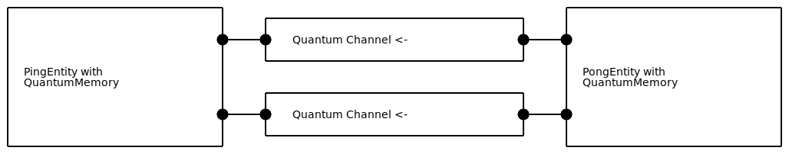

Modelling of network components
In the previous tutorial section we have seen how we can use the discrete event simulator to teleport a qubit. It involved manually instructing the involved entities to schedule the necessary events in time. In this tutorial we will see how this simulation example can be greatly simplified by introducing network components, which are simulation entities that model the physical hardware of a quantum network.
Learning goals
Setting up components such as channels and quantum memories (essential).
Connecting components with ports (essential).
The quantum source component and the state sampler (advanced).
Advanced sections are denoted by an asterix (*).
Components
Components are represented in NetSquid by the Component base class,
which subclasses from Entity.
NetSquid defines several useful base classes that subclass from Component,
such as: quantum and classical channels, quantum memories, quantum sources, and quantum processors.
We introduce several of the classes below, and others such as the quantum processor in a later section of this tutorial.
Components are composed of four types of attributes:
properties that define their physical characteristics,
models that describe functional behaviour,
ports for input and output communication,
and possible subcomponents that they are built out of.
The properties, models and ports of a component are explained in more detail below;
sub-components are covered in a the next tutorial about nodes and connections.
Channels
In the previous example we learnt how timing in NetSquid proceeds via discrete
events (Event), which are scheduled by simulation entities (Entity).
To send a message from Alice to Bob, we can schedule an event when Bob could pick up the message sent by Alice.
This functionality of sending a message with a delay can be modelled by a
channel (Channel), which is
a subclass of the component (Component).
>>> import netsquid as ns
>>> from netsquid.components import Channel, QuantumChannel
>>> channel = Channel(name="MyChannel")
A channel is capable of sending a message in one direction i.e. from its input port at one end to its output port at the other end.
To send any Python object as a message we can put it on the channel’s input port using send():
>>> channel.send("hello world!")
>>> ns.sim_run()
Channels are a subclass of Entity and schedule events to transmit the message.
Therefore we will have to run the simulator for the message to arrive.
To receive the messages, we can call receive().
It returns the messages on the output, as well as the time the messages have been travelling through the channel.
As we did not specify a transmission delay model for the channel it has defaulted to no delay,
which means we can retrieve the message at the same time instance it was sent:
>>> items, delay = channel.receive()
>>> items
['hello world!']
>>> delay
0.0
There are multiple ways to add a delay to the channel. One approach is to initialize the channel with a fixed delay:
>>> Channel(name="DelayChannel", delay=10)
Another approach is to specify a delay model (DelayModel),
a specific subclass of the Model base class used to generate delays.
In general models are used by components to modify their behaviour.
Several delay models have been predefined for convenience. The default is the fixed delay model, which is used if only the delay parameter is specified.
>>> from netsquid.components.models.delaymodels import FixedDelayModel
>>> fixed_delaymodel = FixedDelayModel(delay=10)
A component’s models are stored in its models map attribute and indexed with the appropriate key. It is possible to give a dictionary with models at initialization if preferred.
>>> channel.models['delay_model'] = fixed_delaymodel
>>> channel.send("hello world!")
>>> ns.sim_run()
>>> channel.receive()
(['hello world!'], 10.0)
An example of a model that randomly samples its delay is the Gaussian delay model, which samples from a normal distribution:
>>> from netsquid.components.models.delaymodels import GaussianDelayModel
>>> gaussian_delaymodel = GaussianDelayModel(delay_mean=5, delay_std=0.1)
The FibreDelayModel models the delay present in fibre optic cables.
Its computed delay depends on the speed of light in fibre (c) and the length of the channel.
This length is a property of the channel that can be set at initialization (the default is zero) i.e.
>>> Channel("TutorialChannel", length=10)
It can also be modified after initialization.
>>> channel.properties['length'] = 10
The fibre delay model defines a property for the speed of light in fibre, c, and requires the length property to exist. The properties a model requires are defined in its required_properties attribute:
>>> from netsquid.components.models.delaymodels import FibreDelayModel
>>> delay_model = FibreDelayModel()
>>> print(f"Speed of light in fibre: {delay_model.properties['c']:.1f} [km/s]")
Speed of light in fibre: 200000.0 [km/s]
>>> delay_model.required_properties
['length']
Aside from using channels to send classical messages as we have been doing so far,
we will naturally also want to transmit qubits (Qubit).
To do so we will need our channel to model not only the transmission delay but also to account for any possible quantum noise or loss (attenuation) the qubits experience due to that delay and the channel’s physical characteristics.
For that purpose there is the quantum channel (QuantumChannel),
which is intended for the transmission of qubits (and only qubits).
Besides modeling the transmission delay using a delay model (it subclasses Channel), it also specifies two new model types:
a quantum_noise_model that models noise experienced by qubits during their transmission,
a quantum_loss_model that determines whether the transmitted qubits are lost.
Both the noise and loss model are required to be of type quantum error model (QuantumErrorModel),
a generic class capable of modeling both quantum noise and qubit loss.
Thus the loss model can in principle also be used to apply noise, and vice versa.
The technical difference between the two is that the loss model is applied to the message before it is transmitted,
while the noise model is applied just before it is received.
Because a channel will by default not transmit lost qubits, applying the loss model before transmission can be more efficient.
In order to determine their effects, both models have access to the transmission time and the channel properties.
An example of a loss model is the FibreLossModel.
It requires the length propery of the channel, similarly to the delay model used for fibre optic cables.
>>> from netsquid.components.models.qerrormodels import FibreLossModel
>>> from netsquid.components.qchannel import QuantumChannel
>>> loss_model = FibreLossModel(p_loss_init=0.83, p_loss_length=0.2)
>>> qchannel = QuantumChannel("MyQChannel", length=20, models={'quantum_loss_model': loss_model})
Analogous to the quantum channel for qubits, there also exists the classical channel base class (ClassicalChannel) for transmitting classical information.
It also allows specifying noise and loss models, but we will not be presenting such models in this tutorial.
Quantum memory
While quantum channels are used to transmit qubits, we also need a place to store qubits and to account for any decoherence they experience while they wait.
The component that is designed to handle qubit storage is the quantum memory (QuantumMemory).
>>> from netsquid.components import QuantumMemory
>>> qmem = QuantumMemory(name="MyMemory", num_positions=1)
A quantum memory contains slots for storing qubits called memory positions
(MemoryPosition).
We can add error models to the memory positions that will apply noise to qubits, which is (optionally) proportional to the time they have been idly waiting.
For example, let us consider the depolarize noise model
(DepolarNoiseModel),
which applies depolarizing noise to the qubit.
The speed at which the depolarization happens is called the depolarization rate, which if set
to the (arbitrary) value of 1 MHz means that after a microsecond there is a 63% probability of depolarization.
>>> from netsquid.components.models.qerrormodels import DepolarNoiseModel
>>> depolar_noise = DepolarNoiseModel(depolar_rate=1e6) # the depolar_rate is in Hz
A quantum memory can have multiple memory positions that can each be assigned its own error model. The models can be specified during initialisation:
>>> qmem = QuantumMemory("DepolarMemory", num_positions=2,
... memory_noise_models=[depolar_noise, depolar_noise])
The models can be added to memory positions as follows:
>>> for mem_pos in qmem.mem_positions:
... mem_pos.models['noise_model'] = depolar_noise
To insert a qubit into a quantum memory, it can be put() into the memory.
To get it back out again, we can pop() it from the memory.
If we only want to verify it is in the memory, we can peek() at it.
Peeking can be very useful for debugging purposes.
>>> from netsquid.qubits.qubitapi import create_qubits
>>> qubits = create_qubits(1)
>>> qmem.put(qubits)
>>> qmem.peek(0)
[Qubit('QS#0-0')]
>>> qmem.pop(positions=0)
[Qubit('QS#0-0')]
>>> qmem.peek(0)
[None]
The quantum memory can also be used to instantly operate on qubits. This is different to applying physical gates to qubits, which will be explained in the quantum processor section. To operate we need to select a qubit, and choose an operation to apply. Let’s start with applying an X gate.
>>> import netsquid.qubits.operators as ops
>>> qmem.put(qubits)
>>> qmem.operate(ops.X, positions=[0])
In a later tutorial more advanced operations will be discussed, again including models.
Finally a quantum memory can also measure the qubits. By default a measurement is performed in the standard (Z) basis. The result of a measurement contains two lists with information. The first list contains the measurement outcome for every qubit which was measured. The second list contains the probability of getting that particular outcome. We can measure the qubit we made in the previous example like so:
>>> qmem.measure(positions=[0])
([1], [1.0])
To change the measurement basis we can give an observable or measurement operators.
For instance to measure in the Hadamard (X) basis, we can specify the X observable:
>>> qmem.measure(positions=[0], observable=ops.X)
([...], [0.5])
Now we can manipulate qubits using a quantum memory! Next we will show how to connect it to channels and finish our game of ping pong.
Ports
In the previous tutorial we have seen a game of quantum ping pong simulated using the discrete event paradigm using concepts such as entities, events, event handlers, and event expressions. Before revisiting this example with components, here is a quick recap:
The Ping entity sends out a ping to the Pong entity. When Pong receives the ping, it measures their shared qubit in the Hadamard (X) basis, and then sends a pong back to the Ping entity. On receiving the pong, the Ping entity measures the qubit in the standard (Z) basis, and repeats.
{kind=link}
We have seen how to use a channel and the quantum memory.
For the game of ping pong we want the qubit to be physically transported between the two players using channels,
and to automatically transfer the qubit from the channel to the quantum memory when it arrives.
Both the channel and quantum memory are components, and all components share the same interface for communication,
namely ports (Port).
Ports allow for modularity, and the full power of ports will be shown in the next tutorial.
Here we will introduce ports and how to connect them.
{kind=link}
Previously we used the methods send() and receive() of the Channel class. These are actually convenience methods that make use of the send and recv ports on a channel, respectively. Thus instead of calling send and receive, it also possible to do:
>>> channel = Channel("TutorialChannel", delay=3)
>>> channel.ports['send'].tx_input("hello")
>>> ns.sim_run()
>>> channel.ports['recv'].rx_output()
Message(items=['hello'], header=None, ch_delta_time=3.0)
Ports expect to transmit (TX) and receive (RX) message objects (Message);
for convenience they will wrap a non-message input into a message (as done with “hello” above).
A message is made up of a list of items (the payload), and an optional dictionary of meta data fields.
The meta data is intended to be used for the users convenience – some built in components will also attach meta fields to messages that pass through them.
Ports are always attached to a component, so a distinction is made between transmitting a message into a component (tx_input()) or out of a component (tx_output()).
Similarly, there is a difference between receiving a message that has been output from a component (rx_output()) or that has been input into a component (rx_input()).
So whereas users of a channel we transmit input and receive output, the internal implementation of the channel, which we do not need to know about, will receive input and transmit output.
Two ports can be connected using the connect() method, which will directly pass transmitted output from one port to the received input of the other, and vice versa.
Note that the connecting ports must belong to different components, and these components should have the same sub-component hierarchy i.e. either they both belong to the same super-component, or both have no super-component (parent).
For our PingPong game we want to send the qubit via the channel and store it in the quantum memory on the receiving side. As shown earlier, a quantum memory can use put() to store a qubit. An alternative to put is to send a message containing a list of qubits to the qin port of the quantum memory, or a message with a single qubit to a specific qinX port, where X is the index of a specific memory position. When we connect this port to the receive port of the channel, the arrived qubit will be automatically stored.
>>> channel.ports['recv'].connect(qmem.ports['qin0'])
With the ports connected we can send our qubit via the channel and have it automatically passed onto the quantum memory on the other side:
>>> qubit, = create_qubits(1)
>>> print(qubit)
Qubit('QS#1-0')
>>> channel.send(qubit)
>>> ns.sim_run()
>>> qmem.peek(0)
[Qubit('QS#1-0')]
Ping pong using components and ports
Let us now put these new features together for the ping pong example. We again define a PingEntity and PongEntity with similar methods as in the previous section, however now they will hold a quantum memory that has its output port connected to the input (send port) of a quantum channel. Instead of waiting on each other’s ping and pong events as before, we now tell each entity to wait for qubits arriving on their quantum memory’s input port qin0.
>>> from netsquid.components.component import Port
...
...
>>> class PingEntity(pydynaa.Entity):
... length = 2e-3 # channel length [km]
...
... def __init__(self):
... # Create a memory and a quantum channel:
... self.qmemory = QuantumMemory("PingMemory", num_positions=1)
... self.qchannel = QuantumChannel("PingChannel", length=self.length,
... models={"delay_model": FibreDelayModel()})
... # link output from qmemory (pop) to input of ping channel:
... self.qmemory.ports["qout"].connect(self.qchannel.ports["send"])
... # Setup callback function to handle input on quantum memory port "qin0":
... self._wait(pydynaa.EventHandler(self._handle_input_qubit),
... entity=self.qmemory.ports["qin0"], event_type=Port.evtype_input)
... self.qmemory.ports["qin0"].notify_all_input = True
...
... def start(self, qubit):
... # Start the game by having ping player send the first qubit (ping)
... self.qchannel.send(qubit)
...
... def wait_for_pong(self, other_entity):
... # Setup this entity to pass incoming qubits to its quantum memory
... self.qmemory.ports["qin0"].connect(other_entity.qchannel.ports["recv"])
...
... def _handle_input_qubit(self, event):
... # Callback function called by the pong handler when pong event is triggered
... [m], [prob] = self.qmemory.measure(positions=[0], observable=ns.Z)
... labels_z = ("|0>", "|1>")
... print(f"{ns.sim_time():.1f}: Pong event! PingEntity measured "
... f"{labels_z[m]} with probability {prob:.2f}")
... self.qmemory.pop(positions=[0])
...
>>> class PongEntity(pydynaa.Entity):
... length = 2e-3 # channel length [km]
...
... def __init__(self):
... # Create a memory and a quantum channel:
... self.qmemory = QuantumMemory("PongMemory", num_positions=1)
... self.qchannel = QuantumChannel("PingChannel", length=self.length,
... models={"delay_model": FibreDelayModel()})
... # link output from qmemory (pop) to input of ping channel:
... self.qmemory.ports["qout"].connect(self.qchannel.ports["send"])
... # Setup callback function to handle input on quantum memory:
... self._wait(pydynaa.EventHandler(self._handle_input_qubit),
... entity=self.qmemory.ports["qin0"], event_type=Port.evtype_input)
... self.qmemory.ports["qin0"].notify_all_input = True
...
... def wait_for_ping(self, other_entity):
... # Setup this entity to pass incoming qubits to its quantum memory
... self.qmemory.ports["qin0"].connect(other_entity.qchannel.ports["recv"])
...
... def _handle_input_qubit(self, event):
... # Callback function called by the pong handler when pong event is triggered
... [m], [prob] = self.qmemory.measure(positions=[0], observable=ns.X)
... labels_x = ("|+>", "|->")
... print(f"{ns.sim_time():.1f}: Ping event! PongEntity measured "
... f"{labels_x[m]} with probability {prob:.2f}")
... self.qmemory.pop(positions=[0])
Note that we have chosen to define two separate classes for clarity, but given their similarity we could just as well have defined a single common class for better maintainability.
The simulation setup is the same as before, except that now the linking of pong with ping and vice versa is done by connecting ports instead of waiting on specific ping and pong events (which have been removed):
>>> # Create entities and register them to each other
>>> ns.sim_reset()
>>> ping = PingEntity()
>>> pong = PongEntity()
>>> ping.wait_for_pong(pong)
>>> pong.wait_for_ping(ping)
>>> # Create a qubit and instruct the ping entity to start
>>> qubit, = ns.qubits.create_qubits(1)
>>> ping.start(qubit)
Also running the simulation gives the same results:
>>> ns.set_random_state(seed=42)
>>> stats = ns.sim_run(91)
10.0: Ping event! PongEntity measured |+> with probability 0.50
20.0: Pong event! PingEntity measured |1> with probability 0.50
30.0: Ping event! PongEntity measured |-> with probability 0.50
40.0: Pong event! PingEntity measured |1> with probability 0.50
50.0: Ping event! PongEntity measured |+> with probability 0.50
60.0: Pong event! PingEntity measured |0> with probability 0.50
70.0: Ping event! PongEntity measured |+> with probability 0.50
80.0: Pong event! PingEntity measured |1> with probability 0.50
90.0: Ping event! PongEntity measured |-> with probability 0.50
In this example we saw how to describe simulation timing with components. By using components building and modifying a network becomes easier and more structured. Next we will use what we have learned to build a quantum teleportation scheme using components.
Quantum teleportation using components *
In the previous tutorial on the discrete event simulation we worked with a quantum teleportation example. In this tutorial we will also extend this example with components. We reset the simulation engine and again switch to the density matrix formalism to demonstrate the effects on noise on the final fidelity without the need of sampling.
>>> ns.set_qstate_formalism(ns.QFormalism.DM)
>>> ns.sim_reset()
We will again introduce the simulation entities Alice and Bob. This time, however, they each hold a quantum memory for storing and manipulating their qubits. They are also now initialised with the send and receive ports of the classical channel that they will use to exchange the classical corrections. In the next section we will see how we can use nodes to simplify such communication connections even further.
>>> class Alice(pydynaa.Entity):
... def __init__(self, teleport_state, cchannel_send_port):
... self.teleport_state = teleport_state
... self.cchannel_send_port = cchannel_send_port
... self.qmemory = QuantumMemory("AliceMemory", num_positions=2)
... self._wait(pydynaa.EventHandler(self._handle_input_qubit),
... entity=self.qmemory.ports["qin1"], event_type=Port.evtype_input)
... self.qmemory.ports["qin1"].notify_all_input = True
...
... def _handle_input_qubit(self, event):
... # Callback function that does teleportation and
... # schedules a corrections ready event
... q0, = ns.qubits.create_qubits(1, no_state=True)
... ns.qubits.assign_qstate([q0], self.teleport_state)
... self.qmemory.put([q0], positions=[0])
... self.qmemory.operate(ns.CNOT, positions=[0, 1])
... self.qmemory.operate(ns.H, positions=[0])
... m0, m1 = self.qmemory.measure(positions=[0, 1], observable=ns.Z,
... discard=True)[0]
... self.cchannel_send_port.tx_input([m0, m1])
... print(f"{ns.sim_time():.1f}: Alice received entangled qubit, "
... f"measured qubits & sending corrections")
...
>>> class Bob(pydynaa.Entity):
... depolar_rate = 1e7 # depolarization rate of waiting qubits [Hz]
...
... def __init__(self, cchannel_recv_port):
... noise_model = DepolarNoiseModel(depolar_rate=self.depolar_rate)
... self.qmemory = QuantumMemory("BobMemory", num_positions=1,
... memory_noise_models=[noise_model])
... cchannel_recv_port.bind_output_handler(self._handle_corrections)
...
... def _handle_corrections(self, message):
... # Callback function that handles messages from both Alice and Charlie
... m0, m1 = message.items
... if m1:
... self.qmemory.operate(ns.X, positions=[0])
... if m0:
... self.qmemory.operate(ns.Z, positions=[0])
... qubit = self.qmemory.pop(positions=[0])
... fidelity = ns.qubits.fidelity(qubit, ns.y0, squared=True)
... print(f"{ns.sim_time():.1f}: Bob received entangled qubit and corrections!"
... f" Fidelity = {fidelity:.3f}")
We see that Alice will wait for a qubit to arrive on her memory from Charlie, perform the Bell measurement as before, then send the classical corrections via the port she holds to Bob.
For Bob we have this time assumed (for simplicity) that the corrections from Alice will arrive after his qubit from Charlie, which means we can avoid using event expressions as before.
Instead we demonstrate how a message handler callback, _handle_corrections(), can be bound using bind_output_handler() to the port at Bob’s end of the classical channel,
which will be passed any output message that arrives on it.
Similarly for binding any input message one can use bind_input_handler().
Regarding Charlie, rather than again defining a simulation entity class, we will instead automate his entanglement generation completely using components.
A new component we need to replace Charlie is the quantum source (QSource), which we will connect to Alice and Bob via quantum channels.
A quantum source is a component that can generate one or more qubits in a specific or randomly sampled quantum state.
In the latter case we can specify what state to assign to the generated qubit(s) using a state sampler object (StateSampler):
The statesampler is initialised with a list of states and a list of matching probabilities.
A random state from this list can be sampled with the sample() method.
For this example we will always want the entangled bell state \(\vert B_{00}\rangle\), which is represented by b00 in NetSquid:
>>> from netsquid.qubits.state_sampler import StateSampler
>>> import netsquid.qubits.ketstates as ks
>>> state_sampler = StateSampler([ks.b00], [1.0])
Because we want to send the two generated qubits in different directions, one for Alice and one for Bob, we will specify two output ports to the quantum source constructor with the default names qout0 and qout1.
>>> from netsquid.components.qsource import QSource, SourceStatus
>>> charlie_source = QSource("Charlie", state_sampler, frequency=100, num_ports=2,
... timing_model=FixedDelayModel(delay=50),
... status=SourceStatus.INTERNAL)
The quantum source can be in one of three modes specified by the SourceStatus enumerator: OFF (the default), INTERNAL, and EXTERNAL.
In the internal mode the source operates using its internal clock component (Clock), which can be initialised using the frequency or timing_model parameters.
In the external mode the source waits to be externally triggered by receiving any message on its trigger port.
We can also call trigger() manually to emulate a trigger message arriving on the port.
In the example above we have chosen to use the internal clock with a delay of 50 ns (frequency of 20 GHz).
To setup the network to generate entanglement for Alice and Bob, we connect the output ports of the quantum source to two one-way quantum channels, which we in turn connect to the inputs on the quantum memories of Alice and Bob:
>>> def setup_network(alice, bob, qsource, length=4e-3):
... qchannel_c2a = QuantumChannel("Charlie->Alice", length=length / 2,
... models={"delay_model": FibreDelayModel()})
... qchannel_c2b = QuantumChannel("Charlie->Bob", length=length / 2,
... models={"delay_model": FibreDelayModel()})
... qsource.ports['qout0'].connect(qchannel_c2a.ports['send'])
... qsource.ports['qout1'].connect(qchannel_c2b.ports['send'])
... alice.qmemory.ports['qin1'].connect(qchannel_c2a.ports['recv'])
... bob.qmemory.ports['qin0'].connect(qchannel_c2b.ports['recv'])
We can now create the Alice and Bob entities together with a classical channel between them, and call the network setup:
>>> from netsquid.components import ClassicalChannel
>>> cchannel = ClassicalChannel("CChannel", length=4e-3,
... models={"delay_model": FibreDelayModel()})
>>> alice = Alice(teleport_state=ns.y0, cchannel_send_port=cchannel.ports["send"])
>>> bob = Bob(cchannel_recv_port=cchannel.ports["recv"])
>>> setup_network(alice, bob, charlie_source)
Running the simulation for two entanglement cycles gives us a noisy fidelity outcome as before:
>>> stats = ns.sim_run(end_time=100)
10.0: Alice received entangled qubit, measured qubits & sending corrections
30.0: Bob received entangled qubit and corrections! Fidelity = 0.909
60.0: Alice received entangled qubit, measured qubits & sending corrections
80.0: Bob received entangled qubit and corrections! Fidelity = 0.909
One important difference from the same example presented in the last section is that the quantum noise has now been handled automatically by the quantum memories.
What is next?
In this tutorial we presented how the game of ping pong and quantum teleportation example from the previous section can be improved using the base components of NetSquid and their ports. In the next tutorial we will start creating composite components such as nodes and connections to improve and simplify the network setup even more. It will introduce components with sub-components and how ports can be forwarded between them, allowing for multiple layers of abstraction.